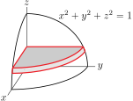
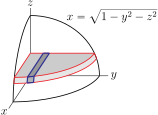
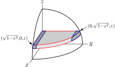
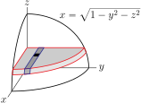
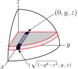

Section 3.5 Triple Integrals
Triple integrals, that is integrals over three dimensional regions, are just like double integrals, only more so. We decompose the domain of integration into tiny cubes, for example, compute the contribution from each cube and then use integrals to add up all of the different pieces. We'll go through the details now by means of a number of examples.
Example 3.5.1.
Find the mass inside the sphere \(x^2+y^2+z^2=1\) if the density is \(\rho(x,y,z) = |xyz|\text{.}\)
The absolute values can complicate the computations. We can avoid those complications by exploiting the fact that, by symmetry, the total mass of the sphere will be eight times the mass in the first octant. We shall cut the first octant part of the sphere into tiny pieces using Cartesian coordinates. That is, we shall cut it up using planes of constant \(z\text{,}\) planes of constant \(y\text{,}\) and planes of constant \(x\text{,}\) which we recall look like
-
First slice the (the first octant part of the) sphere into horizontal plates by inserting many planes of constant \(z\text{,}\) with the various values of \(z\) differing by \(\dee{z}\text{.}\) The figure on the left below shows the part of one plate in the first octant outlined in red. Each plate
- has thickness \(\dee{z}\text{,}\)
- has \(z\) almost constant throughout the plate (it only varies by \(\dee{z}\)), and
- has \((x,y)\) running over \(x\ge 0\text{,}\) \(y\ge 0\text{,}\) \(x^2+y^2\le 1-z^2\text{.}\)
- The bottom plate starts at \(z=0\) and the top plate ends at \(z=1\text{.}\) See the figure on the right below.

-
Concentrate on any one plate. Subdivide it into long thin “square” beams by inserting many planes of constant \(y\text{,}\) with the various values of \(y\) differing by \(\dee{y}\text{.}\) The figure on the left below shows the part of one beam in the first octant outlined in blue. Each beam
- has cross-sectional area \(\dee{y}\,\dee{z}\text{,}\)
- has \(z\) and \(y\) essentially constant throughout the beam, and
- has \(x\) running over \(0\le x\le \sqrt{1-y^2-z^2}\text{.}\)
- The leftmost beam has, essentially, \(y=0\) and the rightmost beam has, essentially, \(y=\sqrt{1-z^2}\text{.}\) See the figure on the right below.
 -
Concentrate on any one beam. Subdivide it into tiny approximate cubes by inserting many planes of constant \(x\text{,}\) with the various values of \(x\) differing by \(\dee{x}\text{.}\) The figure on the left below shows the top of one approximate cube in black. Each cube
- has volume \(\dee{x}\,\dee{y}\,\dee{z}\text{,}\) and
- has \(x\text{,}\) \(y\) and \(z\) all essentially constant throughout the cube.
- The first cube has, essentially, \(x=0\) and the last cube has, essentially, \(x=\sqrt{1-y^2-z^2}\text{.}\) See the figure on the right below.

Now we can build up the mass.
-
Concentrate on one approximate cube. Let's say that it contains the point \((x,y,z)\text{.}\)
- The cube has volume essentially \(\dee{V} = \dee{x}\,\dee{y}\,\dee{z}\) and
- essentially has density \(\rho(x,y,z) = xyz\) and so
- essentially has mass \(xyz\,\dee{x}\,\dee{y}\,\dee{z}\text{.}\)
- To get the mass of any one beam, say the beam whose \(y\) coordinate runs from \(y\) to \(y+\dee{y}\text{,}\) we just add up the masses of the approximate cubes in that beam, by integrating \(x\) from its smallest value on the beam, namely \(0\text{,}\) to its largest value on the beam, namely \(\sqrt{1-y^2-z^2}\text{.}\) The mass of the beam is thus\begin{gather*} \dee{y}\,\dee{z} \int_0^{\sqrt{1-y^2-z^2}} \dee{x}\,xyz \end{gather*}
- To get the mass of any one plate, say the plate whose \(z\) coordinate runs from \(z\) to \(z+\dee{z}\text{,}\) we just add up the masses of the beams in that plate, by integrating \(y\) from its smallest value on the plate, namely \(0\text{,}\) to its largest value on the plate, namely \(\sqrt{1-z^2}\text{.}\) The mass of the plate is thus\begin{gather*} \dee{z}\int_0^{\sqrt{1-z^2}}\dee{y}\int_0^{\sqrt{1-y^2-z^2}} \dee{x}\,xyz \end{gather*}
- To get the mass of the part of the sphere in the first octant, we just add up the masses of the plates that it contains, by integrating \(z\) from its smallest value in the octant, namely \(0\text{,}\) to its largest value on the sphere, namely \(1\text{.}\) The mass in the first octant is thus\begin{align*} &\int_0^1\dee{z}\int_0^{\sqrt{1-z^2}}\dee{y}\int_0^{\sqrt{1-y^2-z^2}} \dee{x}\,xyz\\ &\hskip0.5in= \int_0^1\dee{z}\int_0^{\sqrt{1-z^2}}\dee{y}\ yz \left[\int_0^{\sqrt{1-y^2-z^2}} \dee{x}\,x\right]\\ &\hskip0.5in= \int_0^1\dee{z}\int_0^{\sqrt{1-z^2}}\dee{y}\ \frac{1}{2}yz \big(1-y^2-z^2\big)\\ &\hskip0.5in=\int_0^1\dee{z}\int_0^{\sqrt{1-z^2}}\dee{y}\ \left[\frac{z(1-z^2)}{2}y-\frac{z}{2}y^3\right]\\ &\hskip0.5in=\int_0^1\dee{z}\ \left[\frac{z{(1-z^2)}^2}{4}-\frac{z{(1-z^2)}^2}{8}\right]\\ &\hskip0.5in=\int_0^1\dee{z}\ z\ \frac{{(1-z^2)}^2}{8}\\ &\hskip0.5in=\int_1^0\frac{\dee{u}}{-2}\ \frac{u^2}{8} \qquad\text{with }u=1-z^2,\ \dee{u}=-2z\,\dee{z}\\ &\hskip0.5in=\frac{1}{48} \end{align*}
- So the mass of the total (eight octant) sphere is \(8\times\frac{1}{48}=\frac{1}{6}\text{.}\)
Consider, for example, the limits of integration for the integral
that we have just evaluated in Example 3.5.1.
- When we are integrating over the innermost integral, with respect to \(x\text{,}\) the quantities \(y\) and \(z\) are treated as constants. In particular, \(y\) and \(z\) may appear in the limits of integration for the \(x\)-integral, but \(x\) may not appear in those limits.
- When we are integrating over \(y\text{,}\) we have already integrated out \(x\text{;}\) \(x\) no longer exists. The quantity \(z\) is treated as a constant. In particular, \(z\text{,}\) but neither \(x\) nor \(y\text{,}\) may appear in the limits of integration for the \(y\)-integral.
- Finally, when we are integrating over \(z\text{,}\) we have already integrated out \(x\) and \(y\text{;}\) they no longer exist. None of \(x\text{,}\) \(y\) or \(z\text{,}\) may appear in the limits of integration for the \(z\)-integral.
Example 3.5.2.
In practice, often the hardest part of dealing with a triple integral is setting up the limits of integration. In this example, we'll concentrate on exactly that.
Let \(\cV\) be the solid region in \(\bbbr^3\) bounded by the planes \(x = 0\text{,}\) \(y = 0\text{,}\) \(z=0\text{,}\) \(y = 4 - x\text{,}\) and the surface \(z = 4 - x^2\text{.}\) We are now going to write \(\tripInt_\cV f(x, y, z)\ \dee{V}\) as an iterated integral (i.e. find the limits of integration) in two different ways. Here \(f\) is just some general, unspecified, function.
First, we'll figure out what \(\cV\) looks like. The following three figures show
- the part of the first octant with \(y \le 4 - x\) (except that it continues vertically upward)
- the part of the first octant with \(z \le 4 - x^2\) (except that it continues to the right)
- the part of the first octant with both \(y\le 4-x\) and \(z \le 4 - x^2\text{.}\) That's\begin{equation*} \cV=\Set{(x,y,z)}{x\ge 0, y\ge 0,\ z\ge 0,\ x+y\le 4,\ z\le 4-x^2} \end{equation*}
The iterated integral \(\tripInt_\cV f(x, y, z)\ \dee{z}\,\dee{y} \,\dee{x} =\int\left(\int\left(\int f(x, y, z)\ \dee{z}\right)\dee{y}\right)\dee{x} \text{:}\) For this iterated integral, the outside integral is with respect to \(x\text{,}\) so we first slice up \(\cV\) using planes of constant \(x\text{,}\) as in the figure below.
Observe from that figure that, on \(\cV\text{,}\)
- \(x\) runs from \(0\) to \(2\text{,}\) and
- for each fixed \(x\) in that range, \(y\) runs from \(0\) to \(4-x\) and
- for each fixed \((x,y)\) as above, \(z\) runs from \(0\) to \(4-x^2\text{.}\)
So
The iterated integral \(\tripInt_\cV f(x, y, z)\ \dee{y}\,\dee{x} \,\dee{z} =\int\left(\int\left(\int f(x, y, z)\ \dee{y}\right)\dee{x} \right)\dee{z}\text{:}\) For this iterated integral, the outside integral is with respect to \(z\text{,}\) so we first slice up \(\cV\) using planes of constant \(z\text{,}\) as in the figure below.
Observe from that figure that, on \(\cV\text{,}\)
- \(z\) runs from \(0\) to \(4\text{,}\) and
- for each fixed \(z\) in that range, \(x\) runs from \(0\) to \(\sqrt{4-z}\) and
- for each fixed \((x,z)\) as above, \(y\) runs from \(0\) to \(4-x\text{.}\)
So
Example 3.5.3.
As was said in the last example, in practice, often the hardest parts of dealing with a triple integral concern the limits of integration. In this example, we'll again concentrate on exactly that. This time, we will consider the integral
and we will re-express \(I\) with the outside integral being over \(z\text{.}\) We will figure out the limits of integration for both the order \(\int\dee{z}\int\dee{x}\int\dee{y}\ f(x,y,z)\) and for the order \(\int\dee{z}\int\dee{y}\int\dee{x}\ f(x,y,z)\text{.}\)
Our first task is to get a good idea as to what the domain of integration looks like. We start by reading off of the given integral that
- the outside integral says that \(y\) runs from \(0\) to \(2\text{,}\) and
- the middle integral says that, for each fixed \(y\) in that range, \(z\) runs from \(0\) to \(2-y\) and
- the inside integral says that, for each fixed \((y,z)\) as above, \(x\) runs from \(0\) to \(\frac{2-y}{2}\text{.}\)
So the domain of integration is
We'll sketch \(V\) shortly. Because it is generally easier to make 2d sketches than it is to make 3d sketches, we'll first make a 2d sketch of the part of \(V\) that lies in the vertical plane \(y=Y\text{.}\) Here \(Y\) is any constant between \(0\) and \(2\text{.}\) Looking at the definition of \(V\text{,}\) we see that the point \((x,Y,z)\) lies in \(V\) if and only if
Here, on the left, is a (2d) sketch of all \((x,z)\)'s that obey those inequalities, and, on the right, is a (3d) sketch of all \((x,Y,z)\)'s that obey those inequalities.
So our solid \(V\) consists of a bunch of vertical rectangles stacked sideways along the \(y\)-axis. The rectangle in the plane \(y=Y\) has side lengths \(\frac{2-Y}{2}\) and \(2-Y\text{.}\) As we move from the plane \(y=Y=0\text{,}\) i.e. the \(xz\)-plane, to the plane \(y=Y=2\text{,}\) the rectangle decreases in size linearly from a one by two rectangle, when \(Y=0\text{,}\) to a zero by zero rectangle, i.e. a point, when \(Y=2\text{.}\) Here is a sketch of \(V\) together with a typical \(y=Y\) rectangle.
To re-express the given integral with the outside integral being with respect to \(z\text{,}\) we have to slice up \(V\) into horizontal plates by inserting planes of constant \(z\text{.}\) So we have to figure out what the part of \(V\) that lies in the horizontal plane \(z=Z\) looks like. From the figure above, we see that, in \(V\text{,}\) the smallest value of \(z\) is \(0\) and the biggest value of \(z\) is \(2\text{.}\) So \(Z\) is any constant between \(0\) and \(2\text{.}\) Again looking at the definition of \(V\) in \((*)\) above, we see that the point \((x,y,Z)\) lies in \(V\) if and only if
Here, on the top, is a (2d) sketch showing the top view of all \((x,y)\)'s that obey those inequalities, and, on the bottom, is a (3d) sketch of all \((x,y,Z)\)'s that obey those inequalities.
To express \(I\) as an integral with the order of integration \(\int\dee{z}\int\dee{y}\int\dee{x}\ f(x,y,z)\text{,}\) we subdivide the plate at height \(z\) into vertical strips as in the figure
Since
- \(y\) is essentially constant on each strip with the leftmost strip having \(y=0\) and the rightmost strip having \(y=2-z\) and
- for each fixed \(y\) in that range, \(x\) runs from \(0\) to \(\tfrac{2-y}{2}\)
we have
Alternatively, to express \(I\) as an integral with the order of integration \(\int\dee{z}\int\dee{x}\int\dee{y}\ f(x,y,z)\text{,}\) we subdivide the plate at height \(z\) into horizontal strips as in the figure
Since
- \(x\) is essentially constant on each strip with the first strip having \(x=0\) and the last strip having \(x=1\) and
- for each fixed \(x\) between \(0\) and \(z/2\text{,}\) \(y\) runs from \(0\) to \(2-z\) and
- for each fixed \(x\) between \(z/2\) and \(1\text{,}\) \(y\) runs from \(0\) to \(2-2x\)
we have
Exercises 3.5.1 Exercises
Exercises — Stage 1
1.
Evaluate the integral
without using iteration. Instead, interpret the integral geometrically.
2. ✳.
Find the total mass of the rectangular box \([0, 1] \times [0, 2] \times [0, 3]\) (that is, the box defined by the inequalities \(0 \le x \le 1\text{,}\) \(0 \le y \le 2\text{,}\) \(0 \le z \le 3\)), with density function \(h(x, y, z) = x\text{.}\)
Exercises — Stage 2
3.
Evaluate \(\ds\tripInt_R x\ \dee{V}\) where \(R\) is the tetrahedron bounded by the coordinate planes and the plane \(\frac{x}{a}+\frac{y}{b}+\frac{z}{c}=1\text{.}\)
4.
Evaluate \(\ds\tripInt_R y\ \dee{V}\) where \(R\) is the portion of the cube \(0\le x,y,z\le 1\) lying above the plane \(y+z=1\) and below the plane \(x+y+z=2\text{.}\)
5.
For each of the following, express the given iterated integral as an iterated integral in which the integrations are performed in the order: first \(z\text{,}\) then \(y\text{,}\) then \(x\text{.}\)
- \(\displaystyle \ds\int_0^1\dee{z}\int_0^{1-z}\dee{y}\int_0^{1-z} \dee{x}\ f(x,y,z)\)
- \(\displaystyle \ds\int_0^1\dee{z}\int_{\sqrt z}^1\dee{y}\int_0^y \dee{x}\ f(x,y,z)\)
6. ✳.
A triple integral \(\ds\tripInt_E f\ \dee{V}\) is given in iterated form by
- Draw a reasonably accurate picture of \(E\) in 3--dimensions. Be sure to show the units on the coordinate axes.
- Rewrite the triple integral \(\tripInt_E f\ \dee{V}\) as one or more iterated triple integrals in the order\begin{equation*} \int_{y=}^{y=} \int_{x=}^{x=} \int_{z=}^{z=} f(x,y,z) \ \dee{z}\,\dee{x}\,\dee{y} \end{equation*}
7. ✳.
A triple integral \(\tripInt_E f(x,y,z)\ \dee{V}\) is given in the iterated form
- Sketch the domain \(E\) in 3--dimensions. Be sure to show the units.
- Rewrite the integral as one or more iterated integrals in the form\begin{equation*} J = \int_{y=}^{y=} \int_{x=}^{x=} \int_{z=}^{z=} f(x,y,z) \ \dee{z}\,\dee{x}\,\dee{y} \end{equation*}
8. ✳.
Write the integral given below \(5\) other ways, each with a different order of integration.
9. ✳.
Let \(\displaystyle I = \tripInt_E f(x,y,z)\ \dee{V}\) where \(E\) is the tetrahedron with vertices \((-1, 0, 0)\text{,}\) \((0, 0, 0)\text{,}\) \((0, 0, 3)\) and \((0, -2, 0)\text{.}\)
- Rewrite the integral I in the form\begin{equation*} I = \int_{x=}^{x=}\int_{y=}^{y=}\int_{z=}^{z=} f(x,y,z)\ \dee{z}\,\dee{y}\,\dee{x} \end{equation*}
- Rewrite the integral I in the form\begin{equation*} I = \int_{z=}^{z=}\int_{x=}^{x=}\int_{y=}^{y=} f(x,y,z)\ \dee{y}\,\dee{x}\,\dee{z} \end{equation*}
10. ✳.
Let \(T\) denote the tetrahedron bounded by the coordinate planes \(x = 0\text{,}\) \(y = 0\text{,}\) \(z = 0\) and the plane \(x + y + z = 1\text{.}\) Compute
11. ✳.
Let \(E\) be the portion of the first octant which is above the plane \(z = x + y\) and below the plane \(z = 2\text{.}\) The density in \(E\) is \(\rho(x, y, z) = z\text{.}\) Find the mass of \(E\text{.}\)
12. ✳.
Evaluate the triple integral \(\tripInt_E x\ \dee{V}\text{,}\) where \(E\) is the region in the first octant bounded by the parabolic cylinder \(y = x^2\) and the planes \(y + z = 1\text{,}\) \(x = 0\text{,}\) and \(z = 0\text{.}\)
13. ✳.
Let \(E\) be the region in the first octant bounded by the coordinate planes, the plane \(x + y = 1\) and the surface \(z = y^2\) . Evaluate \(\tripInt_E z\ \dee{V}\) .
14. ✳.
Evaluate \(\tripInt_R yz^2 e^{-xyz}\ \dee{V}\) over the rectangular box
15. ✳.
- Sketch the surface given by the equation \(z = 1 - x^2\text{.}\)
- Let \(E\) be the solid bounded by the plane \(y = 0\text{,}\) the cylinder \(z = 1 - x^2\text{,}\) and the plane \(y = z\text{.}\) Set up the integral\begin{equation*} \tripInt_E f(x,y,z)\,\dee{V} \end{equation*}as an iterated integral.
16. ✳.
Let
Express \(J\) as an integral where the integrations are to be performed in the order \(x\) first, then \(y\text{,}\) then \(z\text{.}\)
17. ✳.
Let \(E\) be the region bounded by \(z = 2x\text{,}\) \(z = y^2\text{,}\) and \(x = 3\text{.}\) The triple integral \(\tripInt f(x,y,z)\,\dee{V}\) can be expressed as an iterated integral in the following three orders of integration. Fill in the limits of integration in each case. No explanation required.
18. ✳.
Let E be the region inside the cylinder \(x^2 + y^2 = 1\text{,}\) below the plane \(z = y\) and above the plane \(z = -1\text{.}\) Express the integral
as three different iterated integrals corresponding to the orders of integration: (a) \(\dee{z}\, \dee{x}\, \dee{y}\text{,}\) (b) \(\dee{x}\, \dee{y}\, \dee{z}\text{,}\) and (c) \(\dee{y}\, \dee{z}\, \dee{x}\text{.}\)
19. ✳.
Let \(E\) be the region bounded by the planes \(y=0\text{,}\) \(y=2\text{,}\) \(y+z=3\) and the surface \(z=x^2\text{.}\) Consider the intergal
Fill in the blanks below. In each part below, you may need only one integral to express your answer. In that case, leave the other blank.
- \(\displaystyle \displaystyle I=\int_{\underline{\ \ \ \ }}^{\underline{\ \ \ \ }} \int_{\underline{\ \ \ \ }}^{\underline{\ \ \ \ }} \int_{\underline{\ \ \ \ }}^{\underline{\ \ \ \ }} \! f(x,y,z)\ \dee{z}\,\dee{x}\,\dee{y} + \int_{\underline{\ \ \ \ }}^{\underline{\ \ \ \ }} \int_{\underline{\ \ \ \ }}^{\underline{\ \ \ \ }} \int_{\underline{\ \ \ \ }}^{\underline{\ \ \ \ }} \! f(x,y,z)\ \dee{z}\,\dee{x}\,\dee{y} \)
- \(\displaystyle \displaystyle I=\int_{\underline{\ \ \ \ }}^{\underline{\ \ \ \ }} \int_{\underline{\ \ \ \ }}^{\underline{\ \ \ \ }} \int_{\underline{\ \ \ \ }}^{\underline{\ \ \ \ }} \! f(x,y,z)\ \dee{x}\,\dee{y}\,\dee{z} + \int_{\underline{\ \ \ \ }}^{\underline{\ \ \ \ }} \int_{\underline{\ \ \ \ }}^{\underline{\ \ \ \ }} \int_{\underline{\ \ \ \ }}^{\underline{\ \ \ \ }} \! f(x,y,z)\ \dee{x}\,\dee{y}\,\dee{z} \)
- \(\displaystyle \displaystyle I=\int_{\underline{\ \ \ \ }}^{\underline{\ \ \ \ }} \int_{\underline{\ \ \ \ }}^{\underline{\ \ \ \ }} \int_{\underline{\ \ \ \ }}^{\underline{\ \ \ \ }} \! f(x,y,z)\ \dee{y}\,\dee{x}\,\dee{z} + \int_{\underline{\ \ \ \ }}^{\underline{\ \ \ \ }} \int_{\underline{\ \ \ \ }}^{\underline{\ \ \ \ }} \int_{\underline{\ \ \ \ }}^{\underline{\ \ \ \ }} \! f(x,y,z)\ \dee{y}\,\dee{x}\,\dee{z} \)
20. ✳.
Evaluate \(\tripInt_E z\,\dee{V}\text{,}\) where \(E\) is the region bounded by the planes \(y=0\text{,}\) \(z=0\) \(x+y=2\) and the cylinder \(y^2+z^2=1\) in the first octant.
21. ✳.
Find \(\ds\tripInt_D x\,\dee{V}\) where \(D\) is the tetrahedron bounded by the planes \(x=1\text{,}\) \(y=1\text{,}\) \(z=1\text{,}\) and \(x+y+z=2\text{.}\)
22. ✳.
The solid region \(T\) is bounded by the planes \(x=0\text{,}\) \(y=0\text{,}\) \(z=0\text{,}\) and \(x+y+z=2\) and the surface \(x^2+z=1\text{.}\)
- Draw the region indicating coordinates of all corners.
- Calculate \(\tripInt_T x\,\dee{V}\text{.}\)